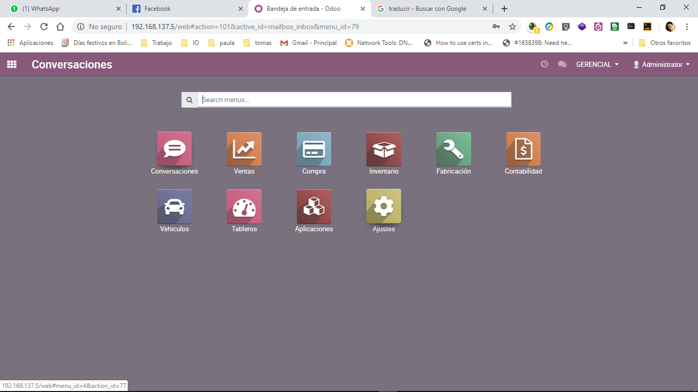
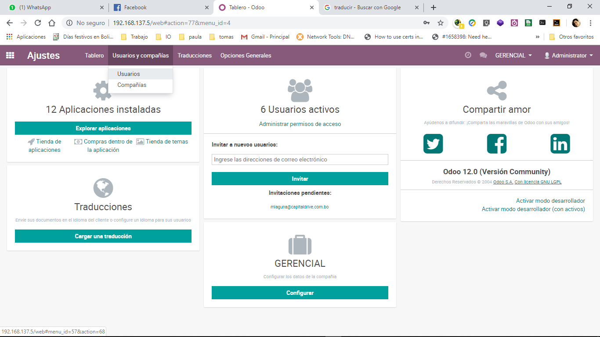
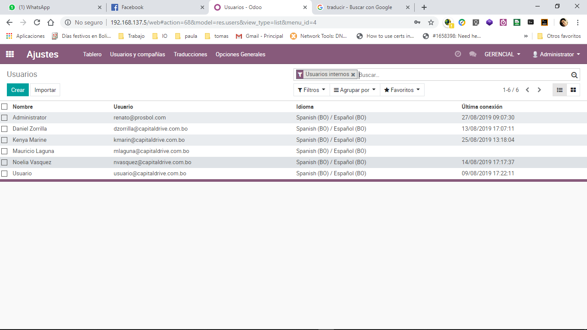
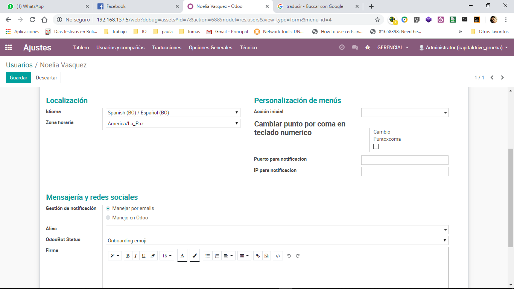
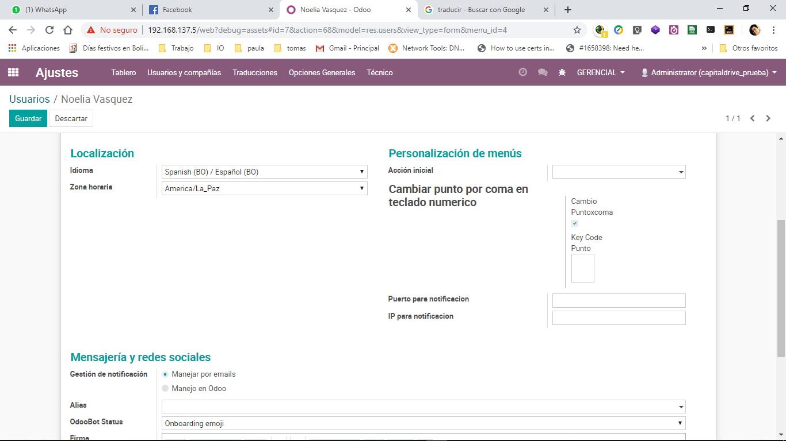
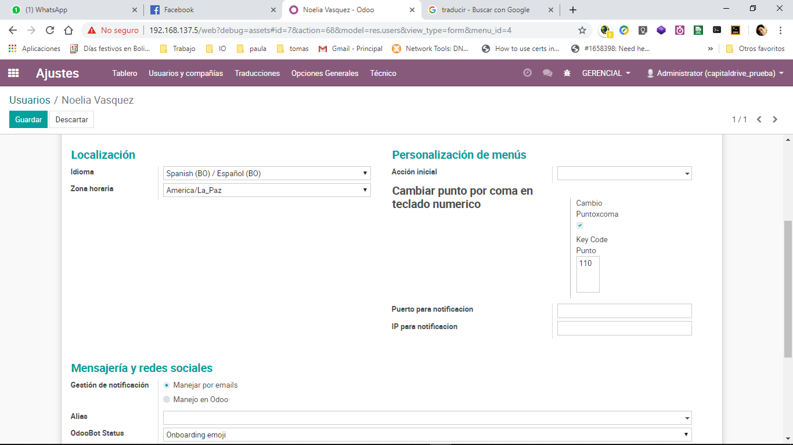
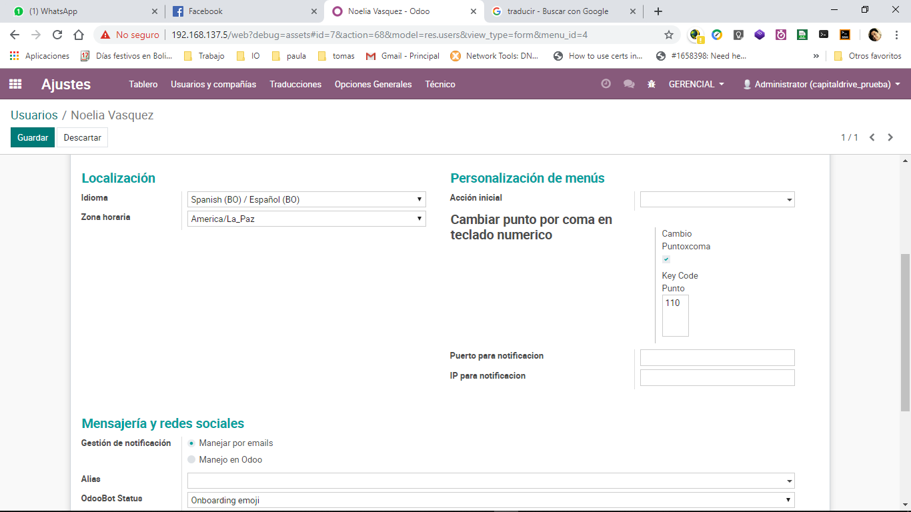
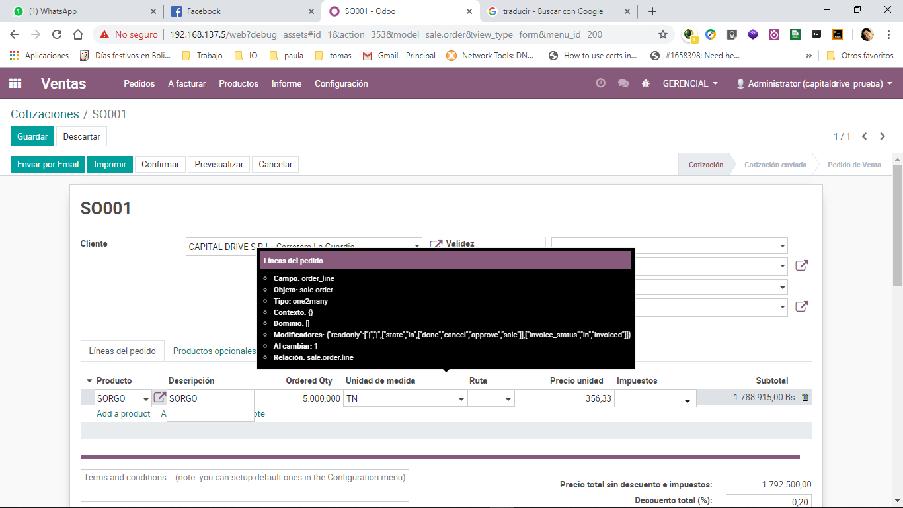

1. Place in developer mode
2. Go to /config/users and compay/users select users
3. Select a user by config key numpad
4. Go to the preferences tab
5. Enable the key code point option
6. A text box will appear, place the cursor on this box and press the dot key on your numeric keypad, the text box will appear the ASCII code of that tecal
7. Sve data
8. Refresh browser, press F5
9. Ready, Now you can use the period key in the numerical input inputs, exapmle sale order
